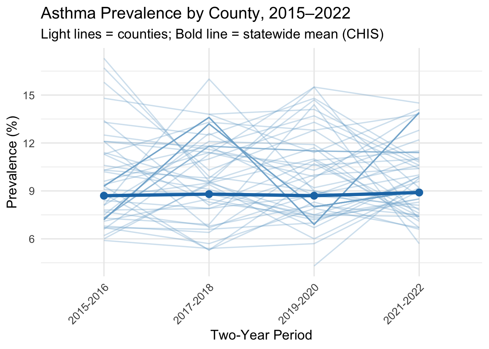
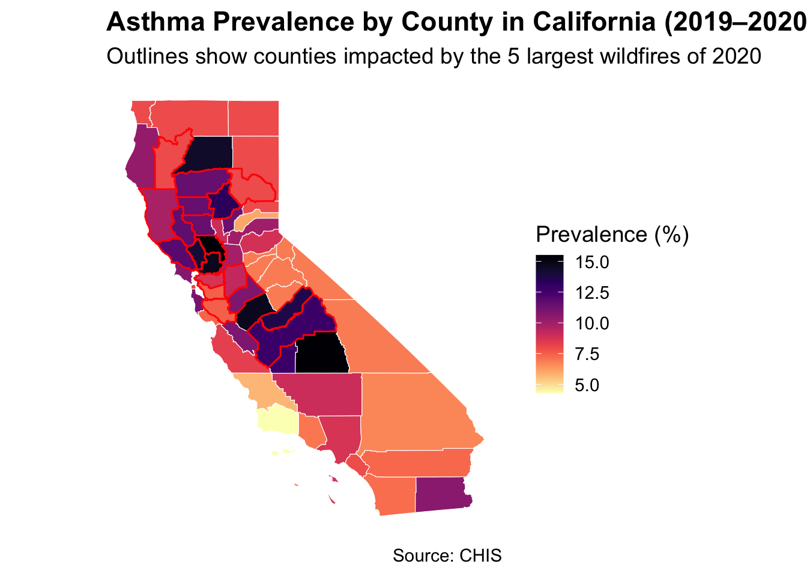

── Attaching core tidyverse packages ──────────────────────── tidyverse 2.0.0 ──
✔ dplyr 1.1.4 ✔ readr 2.1.5
✔ forcats 1.0.0 ✔ stringr 1.5.1
✔ ggplot2 4.0.0 ✔ tibble 3.3.0
✔ lubridate 1.9.4 ✔ tidyr 1.3.1
✔ purrr 1.1.0
── Conflicts ────────────────────────────────────────── tidyverse_conflicts() ──
✖ dplyr::filter() masks stats::filter()
✖ dplyr::lag() masks stats::lag()
ℹ Use the conflicted package (<http://conflicted.r-lib.org/>) to force all conflicts to become errors
Code
library(janitor)
Attaching package: 'janitor'
The following objects are masked from 'package:stats':
chisq.test, fisher.test
Code
library(dplyr)library(ggplot2)library(sf)
Linking to GEOS 3.13.0, GDAL 3.8.5, PROJ 9.5.1; sf_use_s2() is TRUE
Code
library(tigris)
To enable caching of data, set `options(tigris_use_cache = TRUE)`
in your R script or .Rprofile.
Code
library(viridis)
Loading required package: viridisLite
Code
prev_clean <-readRDS("prev_clean.rds")
3.1 Statewide Asthma Prevalence:
Code
prev_statewide <- dplyr::filter(prev_clean, county =="California")ggplot(prev_statewide, aes(x = years_period, y = prevalence, group =1)) +geom_line(size =1.2, color ="#1D6996") +geom_point(size =3, color ="#1D6996") +labs(title ="Statewide Current Asthma Prevalence in California (CHIS)",subtitle ="Two-year period estimates, 2015–2022",x ="Two-Year Period",y ="Prevalence (%)" ) +theme_minimal(base_size =14) +theme(axis.text.x =element_text(angle =45, hjust =1) )
Warning: Using `size` aesthetic for lines was deprecated in ggplot2 3.4.0.
ℹ Please use `linewidth` instead.
Statewide asthma prevalence in California remained relatively stable between 2015 and 2022, fluctuating within a narrow range of about 8.7% to 8.9%. The slight dip in 2019–2020 followed by an increase in 2021–2022 may reflect shifts in healthcare access, reporting, or environmental exposures during COVID, instead of a large change in asthma prevalence.
3.2 County-wide Asthma Prevalence:
Code
# Split statewide outstatewide <- prev_clean |>filter(county =="California")prev_counties <- prev_clean |>filter(county !="California")ggplot() +# county linesgeom_line(data = prev_counties,aes(x = years_period, y = prevalence, group = county),alpha =0.35, color ="#80b1d3") +# statewide linegeom_line(data = statewide,aes(x = years_period, y = prevalence, group =1),linewidth =1.6, color ="#1f78b4") +geom_point(data = statewide,aes(x = years_period, y = prevalence),size =3, color ="#1f78b4") +labs(title ="Asthma Prevalence by County, 2015–2022",subtitle ="Light lines = counties; Bold line = statewide mean (CHIS)",x ="Two-Year Period",y ="Prevalence (%)" ) +theme_minimal(base_size =14) +theme(axis.text.x =element_text(angle =45, hjust =1))
Warning: Removed 1 row containing missing values or values outside the scale range
(`geom_line()`).

County-level asthma prevalence in California shows substantial variation, with some counties consistently reporting rates several percentage points above or below the statewide average. Despite this spread, the statewide prevalence remained relatively stable from 2015–2022, fluctuating only between about 8.7–9%. This suggests that while local conditions drive meaningful differences at the county level, the overall asthma burden in California has not shifted dramatically over the past decade.
Selected counties show clear differences in asthma prevalence over time. Counties such as Fresno and Butte consistently report higher asthma prevalence, while San Francisco, Marin, and Los Angeles maintain lower levels across all periods. The stability of these county rankings suggests that structural or environmental factors—rather than short-term fluctuations—play a major role in shaping asthma burden across California.
3.4 2019 - 2020 Asthma Prevalence Chloropleth:
Code
wildfire_major5 <-c(# August Complex"mendocino", "trinity", "tehama", "glenn", "lake",# SCU Lightning Complex"santa clara", "alameda", "stanislaus", "san joaquin", "contra costa",# LNU Lightning Complex"napa", "sonoma", "solano", "yolo", "lake",# Creek Fire"fresno", "madera",# North Complex"butte", "plumas")# load county geomca_geom <-counties(state ="CA", cb =TRUE, year =2023) |>st_as_sf() |>mutate(county =tolower(NAME)) |>select(county, geometry)
# filter for 2019 - 2020 period prev_2020 <- prev_clean |>filter(years_period =="2019-2020") |>mutate(county =tolower(county)) |>select(county, prevalence)map_prev <- ca_geom |>left_join(prev_2020, by ="county") |>mutate(wildfire_major = county %in% wildfire_major5)ggplot(map_prev) +geom_sf(aes(fill = prevalence), color ="white", size =0.2) +geom_sf(data =subset(map_prev, wildfire_major ==TRUE),fill =NA,color ="red",size =0.5 ) +scale_fill_viridis(name ="Prevalence (%)",option ="magma",direction =-1,na.value ="grey90" ) +labs(title ="Asthma Prevalence by County in California (2019–2020)",subtitle ="Outlines show counties impacted by the 5 largest wildfires of 2020",caption ="Source: CHIS" ) +theme_minimal(base_size =14) +theme(axis.text =element_blank(),axis.title =element_blank(),panel.grid =element_blank(),plot.title =element_text(face ="bold") )

The choropleth map shows substantial geographic variation in asthma prevalence across California in 2019–2020, with many Northern and Central counties reporting rates above the statewide average. Notably, several counties affected by the five largest wildfires of 2020 also exhibit relatively elevated asthma prevalence, suggesting a potential overlap between regions experiencing severe wildfire exposure and communities with higher asthma rates.